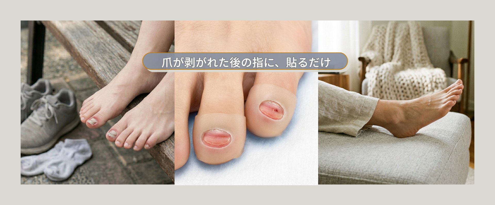
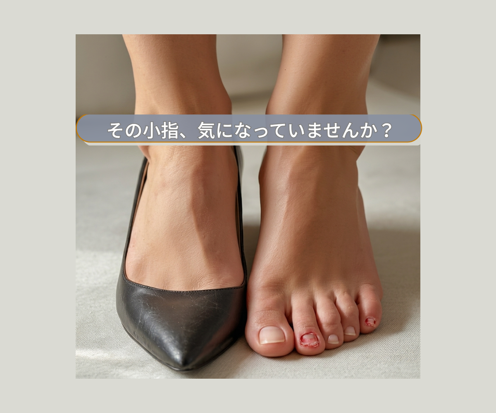
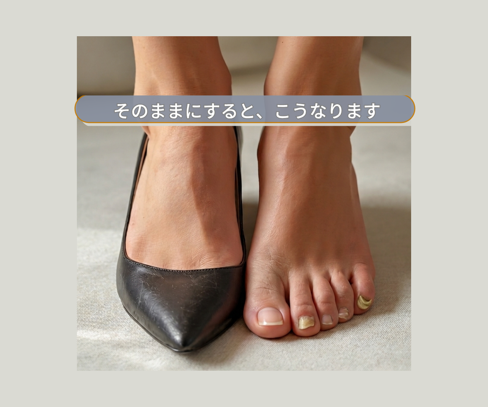
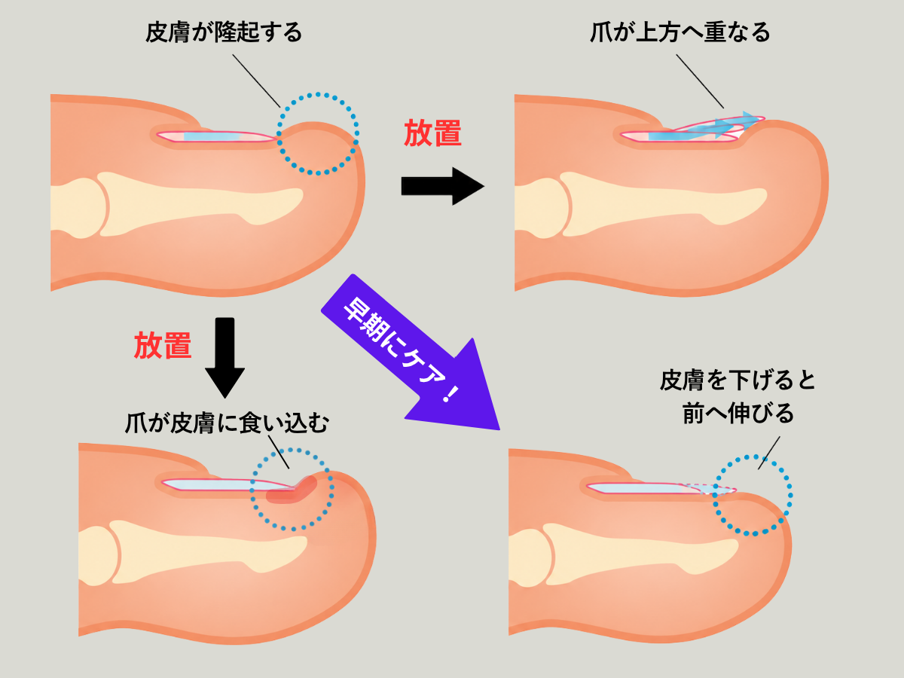
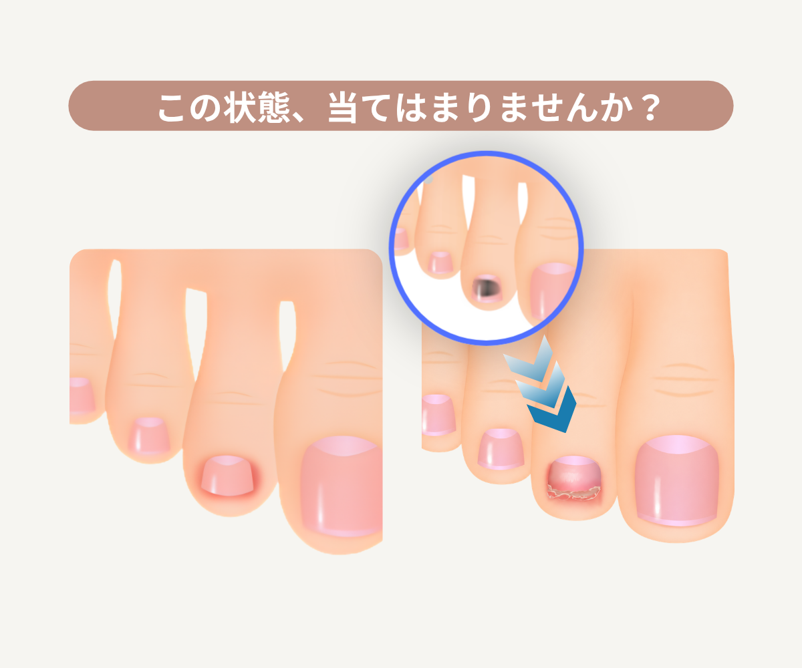
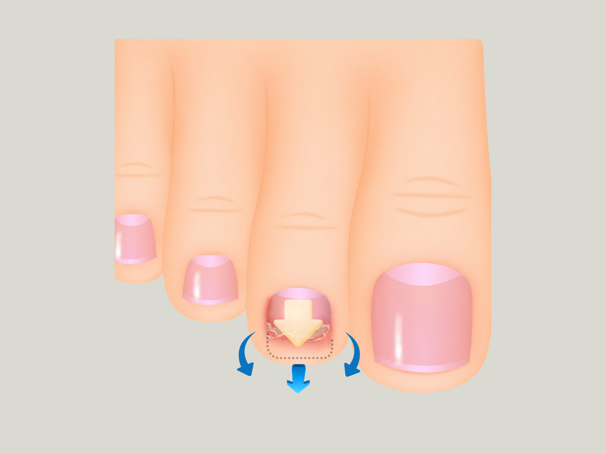
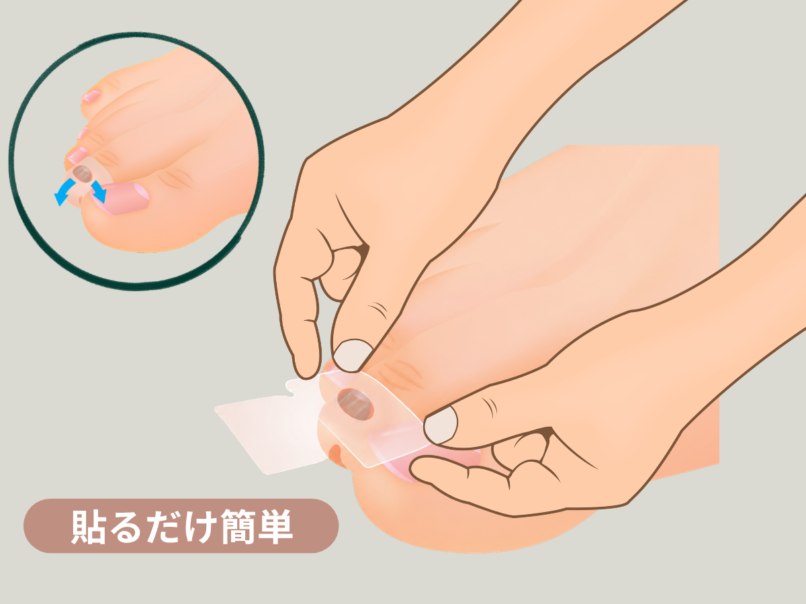
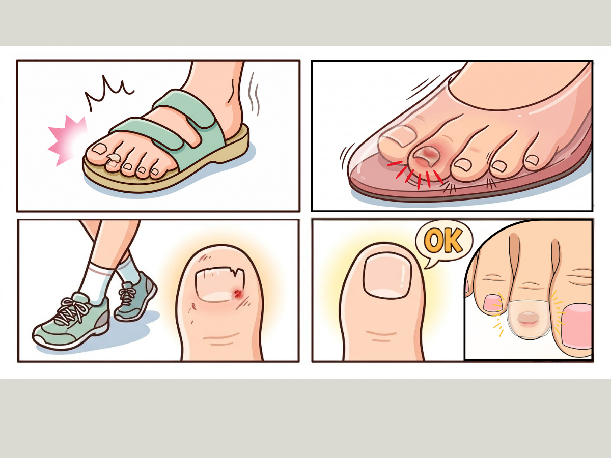
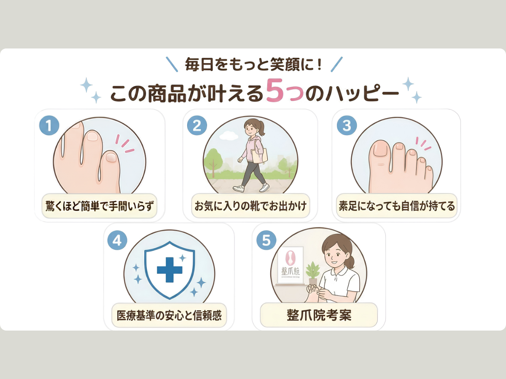
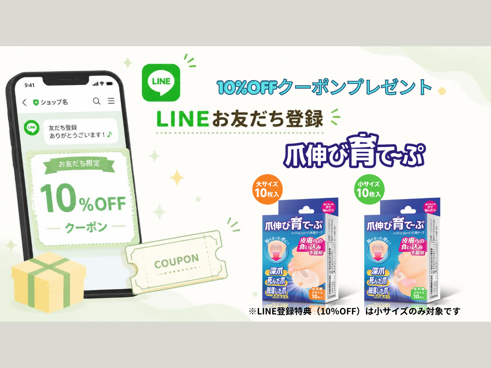

深爪・爪剥がれ後の小さな爪を、
貼るだけでやさしくサポート。
爪伸び育て～ぷは、短くなった足の爪まわりの皮膚をそっと下げ、爪が前へ伸びていきやすい環境づくりをサポートするセルフケア用テープです。爪伸び育て～ぷ（小サイズ）は第2趾〜第5趾など、小さな爪に合わせたケアを想定しています。
その小指、気になっていませんか？
見えにくい場所だからこそ、気づいた時には短くなっていることがあります。

- 靴やサンダルに第2趾〜第5趾の爪が当たってトラブルが多い
- 深爪や爪剥がれ後、爪が短いまま気になる
- 普通の絆創膏やテープでは対処が困難
- 病院に行くほどではないけれど、何かケアしたい
そのままにすると、
爪が伸びる道が狭くなることも。
短くなった爪の先に皮膚が盛り上がると、爪が前へ伸びにくくなります。

短くなった爪が伸びにくく感じる仕組み
皮膚の盛り上がりと爪の進行方向を、イメージで整理します。

爪伸び育て～ぷは、皮膚を下げた状態をテープでサポートし、短くなった爪の先にスペースをつくる発想の商品です。無理に矯正するものではなく、日常の中で使いやすいセルフケアを目指しています。

この状態、当てはまりませんか？
深爪、内出血後、爪剥がれ後など、短くなった爪には早い段階のケアが役立つ場合があります。
皮膚を下げて、
爪が前へ伸びるスペースを。
短くなった爪が皮膚に埋もれないよう、周囲の皮膚を下げるという考え方です。

使い方は、貼るだけ簡単
第2趾〜第5趾の短い爪まわりに、爪伸び育て～ぷを貼ってサポートします。

こんなシーンで、短くなった爪に
サンダル・パンプス・スポーツ後など、日常の中で気になる小さな爪に。

購入前によくある質問
ご購入前に迷いやすいポイントだけを、短くまとめました。
どのような爪に使用できますか？
深爪や内出血後に爪が剥がれて短くなった足の爪の保護にご使用いただけます。抗がん剤などの薬の副作用により爪が脱落して短くなった場合にもご利用いただけます。
※グラグラしている爪や脱落前の爪には使用できません。爪が脱落した後にご使用ください。
靴を履いても大丈夫ですか？
貼ったまま靴を履くことは可能です。ただし、爪のトラブルが生じた原因となる靴、例えば、つま先の細い靴やハイヒールや大きすぎる靴は爪先への負担が大きくなるため、できるだけ避けることをおすすめします。
テープを貼ったまま運動はできますか？
可能です。貼る時にしっかりと密着させてください。また、素足で行うスポーツの場合などに剥がれにくくする方法も別途ご案内しております。
巻き爪にも使えますか？
巻き爪の際の応急的な爪の食い込み緩和対策としてご利用いただけます。ただし、本品に巻き爪を矯正する効果はありません。
どのくらいの期間使用しますか？
足の爪は通常、1か月に約1.5mm伸びると言われています。爪の状態に合わせて継続してご使用ください。
この商品が叶える5つのハッピー
貼りやすさ・生活のしやすさ・安心感をまとめました。


LINEお友だち登録で
10%OFFクーポン
ご購入前に使えるLINE登録特典です。
小サイズのみ対象です。
※LINE登録特典（10%OFF）は小サイズのみ対象です。
短くなった爪の不安に、
今日からできるセルフケア。
第2趾〜第5趾の短くなった爪に。まずは小サイズからお試しください。
本品は医薬品ではありません。炎症・強い痛み・出血などがある場合は医療機関へご相談ください。